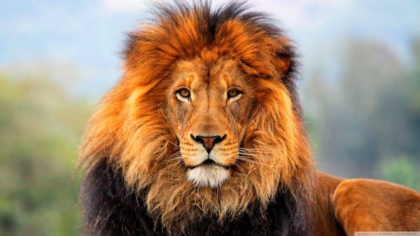

LION
Lions are large, powerful carnivorous mammals known as the "kings of the jungle," although they typically live in grasslands and savannas. They belong to the big cat family (Felidae) and are known for their majestic appearance and social behavior.
🦁 Key Facts About Lions:
Where They Live:
- Native to Africa (mainly sub-Saharan).
- A small population also exists in India (Asiatic lions).
A small population also exists in India (Asiatic lions).
Where Lions Live:
African Lions (Panthera leo leo)
- Tanzania – Serengeti National Park
- Kenya – Maasai Mara National Reserve
- Botswana – Okavango Delta
- South Africa – Kruger National Park
Asiatic Lions (Panthera leo persica)
- Gir Forest National Park, Gujarat, India
- Dry deciduous forests
- Scrubland
You cannot legally get or own a lion from the wild. Lions are protected wildlife, and in many countries, capturing, trading, or keeping lions without a very strict license is illegal and considered wildlife trafficking.